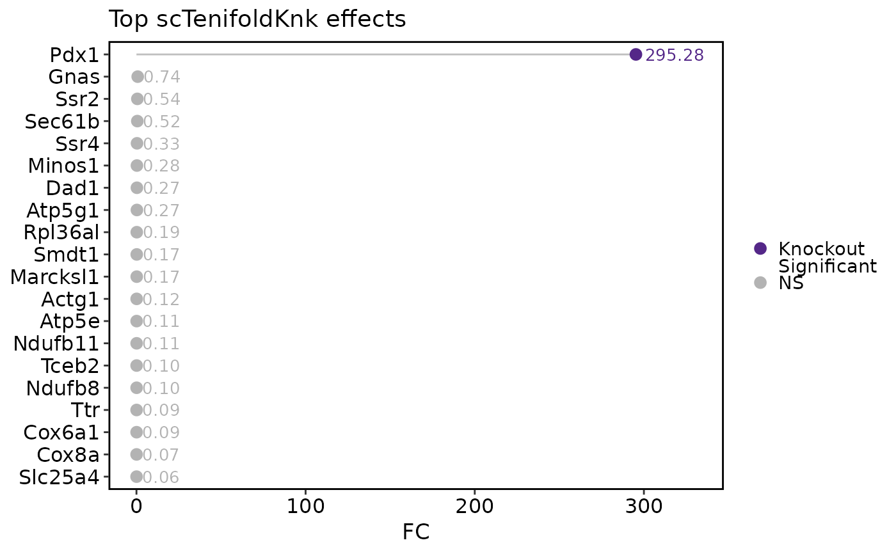

Run scTenifoldKnk in-silico knockout analysis
Usage
RunscTenifoldKnk(
srt,
gKO,
assay = NULL,
layer = "counts",
features = NULL,
qc = TRUE,
qc_mt_threshold = 0.1,
qc_min_library_size = 1000,
qc_min_cells = 25,
nc_lambda = 0,
nc_nNet = 10,
nc_nCells = 500,
nc_nComp = 3,
nc_scaleScores = TRUE,
nc_symmetric = FALSE,
nc_q = 0.9,
td_K = 3,
td_maxIter = 1000,
td_maxError = 1e-05,
td_nDecimal = 3,
ma_nDim = 2,
cores = 1,
backend = c("cpp", "r"),
store_networks = TRUE,
store_manifold = TRUE,
tool_name = "scTenifoldKnk",
verbose = TRUE
)Arguments
- srt
A Seurat object.
- gKO
Gene symbol or symbols to knock out. All genes must be present after optional feature and QC filtering.
- assay
Which assay to use. If
NULL, the default assay of the Seurat object will be used. When the object also containsChromatinAssay, the default assay and additionalChromatinAssaywill be preprocessed sequentially.- layer
Assay layer used as the count matrix.
- features
Optional genes to retain before running network construction. If supplied,
gKOis always retained when present in the input assay.- qc
Whether to apply scTenifoldKnk-style quality control.
- qc_mt_threshold
Maximum mitochondrial read fraction per cell.
- qc_min_library_size
Minimum library size per cell.
- qc_min_cells
Minimum number of expressing cells required per gene.
- nc_lambda, nc_nNet, nc_nCells, nc_nComp, nc_scaleScores, nc_symmetric, nc_q
Network construction parameters forwarded to
scTenifoldNet::makeNetworks().- td_K, td_maxIter, td_maxError, td_nDecimal
Tensor decomposition parameters forwarded to
scTenifoldNet::tensorDecomposition().- ma_nDim
Manifold-alignment dimension forwarded to
scTenifoldNet::manifoldAlignment().- cores
Number of cores used by native network-construction workers and forwarded to downstream linear algebra where applicable.
- backend
cppis a native equivalent covariance-based network construction, direct sparse network assembly, controlled per-gene eigensolver parallelism, and helpers for tensor decomposition, manifold matrix construction, directionality, and distance calculation.rcallsscTenifoldKnk::scTenifoldKnk()directly for comparison.- store_networks
Whether to keep WT/KO tensor networks in
srt@tools.- store_manifold
Whether to keep manifold-alignment coordinates in
srt@tools.- tool_name
Name of the
srt@toolsentry.- verbose
Whether to print the message. Default is
TRUE.
Examples
data(pancreas_sub)
gene_use <- "Pdx1"
counts <- GetAssayData5(
pancreas_sub,
assay = "RNA",
layer = "counts"
)
detected <- names(
sort(Matrix::rowSums(counts > 0),
decreasing = TRUE)
)
features_use <- unique(c(gene_use, head(detected, 300)))
pancreas_sub <- RunscTenifoldKnk(
pancreas_sub,
gKO = gene_use,
features = features_use,
qc = FALSE,
nc_nNet = 3,
nc_nCells = 200,
td_maxIter = 200,
store_networks = FALSE,
store_manifold = TRUE
)
#> ℹ [2026-05-23 11:54:16] Run scTenifoldKnk knockout for "Pdx1" using "cpp" backend
#> ℹ [2026-05-23 11:54:21] Construct scTenifoldNet network ensemble
#> ℹ [2026-05-23 11:54:21] Denoise network ensemble with tensor decomposition
#> ℹ [2026-05-23 11:54:21] Denoise network ensemble with tensor decomposition ■■ …
#> ℹ [2026-05-23 11:54:21] Align WT and KO network manifolds
#> ✔ [2026-05-23 11:54:21] scTenifoldKnk results stored in `srt@tools[[scTenifoldKnk]]`
dr <- pancreas_sub@tools$scTenifoldKnk$diffRegulation
head(dr)
#> gene distance Z FC p.value p.adj
#> 1 Pdx1 6.561133e-04 3.960281 7251.32977 0.000000e+00 0.000000e+00
#> 2 Cd81 7.531816e-05 2.333559 95.55631 1.437441e-22 2.163349e-20
#> 3 Myl6 3.422043e-05 1.851658 19.72563 8.939449e-06 8.969248e-04
#> 4 Actg1 3.355487e-05 1.840318 18.96580 1.330824e-05 1.001445e-03
#> 5 Ssr2 2.707015e-05 1.718310 12.34359 4.425038e-04 2.663873e-02
#> 6 Sec61b 2.486587e-05 1.671045 10.41519 1.249829e-03 6.269975e-02
scTenifoldKnkPlot(pancreas_sub, plot_type = "effect")
